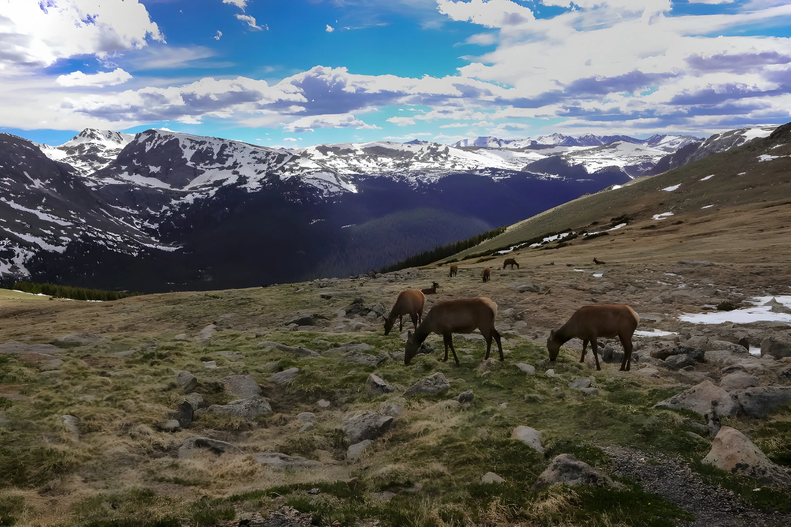

Introduction
The alpine ecosystem is found at high altitudes above the tree line, where environmental conditions are extreme. These ecosystems exist in mountain regions across the world, including the Himalayas, Alps, Andes, and Rockies.
Climate of Alpine Ecosystem
Alpine regions experience cold temperatures, strong winds, intense sunlight, and short growing seasons. Snowfall is common, and weather conditions can change rapidly within hours.
Flora
Alpine plants are low-growing and specially adapted to survive harsh conditions. Common flora includes alpine grasses, mosses, lichens, cushion plants, and dwarf flowering plants that grow close to the ground to resist wind and cold.
Fauna
Animals in alpine ecosystems are adapted to cold temperatures and low oxygen levels. Species include mountain goats, snow leopards, yaks, marmots, pikas, and alpine birds. Thick fur and strong limbs help them survive rugged terrain.
Threats to Alpine Ecosystem
Alpine ecosystems are threatened by climate change, glacier melting, tourism pressure, mining activities, and habitat disturbance. Rising temperatures are causing shifts in species distribution.
Conservation Efforts
Conservation efforts include protected mountain reserves, sustainable tourism practices, wildlife monitoring, and global actions to reduce climate change impacts on high-altitude ecosystems.
Importance of the Alpine Ecosystem
Alpine ecosystems play a vital role in freshwater supply, biodiversity conservation, and climate regulation. Many rivers originate from alpine glaciers, supporting millions of people downstream.
Fun Facts about the Alpine Ecosystem
- Alpine plants can survive freezing temperatures year-round.
- Some alpine flowers bloom within weeks of snow melting.
- Alpine regions receive stronger UV radiation than lowlands.
Conclusion
The alpine ecosystem is a fragile yet vital part of the Earth’s natural system. Protecting these high-altitude environments is essential for preserving biodiversity, water resources, and global climate balance.